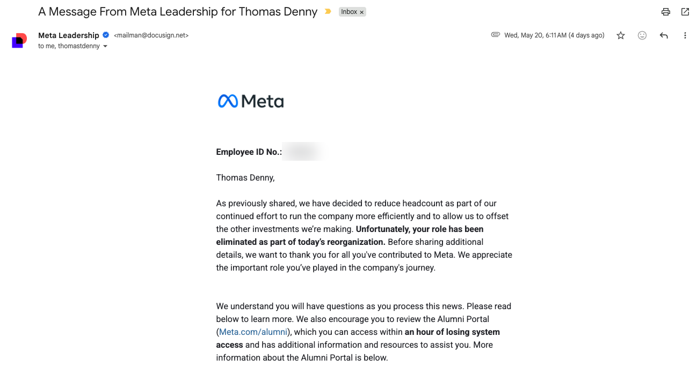

What I'm Up To Right Now
Updated May 2026 — Austin, TX
Reading
AI Snake Oil by Arvind Narayanan and Sayash Kapoor. Set aside I Didn't Do the Thing Today by Madeleine Dore partway through. Wasn't getting enough out of it to keep going.
Also read From Hierarchy to Intelligence from Block. His main point: hierarchy is an information-routing protocol. True as far as it goes, but it misses the human side. In our culture, hierarchy is also a meaning-making machine. These structures give people a sense of and opportunity for personal evolution. That part is missing from his framing.
Training
Still foundational, but less of a priority this year. I've shifted that energy and focus to studying and work. Getting consistent again with two to three gym sessions a week, though I haven't started running back up yet.
Learning
Wrapped the UT Austin GenAI course. Now going deeper on Claude Code and building out a second brain in Obsidian, with the goal of linking it to an interactive personal dashboard to manage my personal life.
Work
Meta went through a 10% reduction in force this month. My entire team was impacted, including me. The day before, I'd signed an offer letter for the AI Accelerator team as a Solutions Architect. I've been studying and working for over two years to be ready for this kind of role. Excited for it, but heartbroken for what happened to my team. Thinking a lot about how I want to show up over the next stretch.

Life / Etc
The Italy trip with my mom is coming up in August. Excited for that one.
Slowly building out my record collection. Recently saw the Michael Jackson movie with Jenny and thoroughly enjoyed it. Picked up Off the Wall afterwards and have been listening non-stop ever since.
Thinking About
Which skills to sharpen, and which gaps to close looking three to six months out. Beyond that, the human impact of AI and what its ramifications actually look like.
What organizational structures and hierarchy will look like with the rapid spread of AI tools. What that means for career advancement, career satisfaction, and what it takes to stay relevant in the job market going forward.
What I'm Up To Right Now
Updated April 2026 — Austin, TX
Reading
I Didn't Do the Thing Today by Madeleine Dore. On letting go of productivity guilt. Just started.
Training
Getting back into it after taking most of March off. Starting to layer strength back in alongside running. Just rebuilding consistency.
Learning
Final four weeks of the UT Austin GenAI course. We're covering LLM fine-tuning, ethical AI, LLM security, and agentic workflows. Also doing more AI presentations and trainings at work, which is forcing me to articulate things more clearly than I would if I were just learning for myself.
Building
Putting real time into this site. Adding pages, logging deep work hours, making it feel like a place I actually want to maintain. It's become one of my favorite creative outlets right now.
Started structuring my guitar practice more intentionally too.
Life / Etc
One of my best friends is coming into town at the end of the month.
Thinking About
Opportunity cost. The idea that we can do anything but not everything, and what that actually means for how I'm spending my time. It's easy to fill a calendar and stay busy. It's hard to be honest about what you're trading away to do it.
What I'm Up To Right Now
Updated March 2026 — Austin, TX
Reading
Man's Search for Meaning by Viktor Frankl.
Training
Taking a break this month. My body and mind have felt tired from the last few months of training. Getting back into a movement routine in April, especially as outside stressors mount up.
Learning
Wrapped up the second project in the GenAI course. I've been doubling down on AI learning and application this month and feel like I've made a lot of progress.
Next month: LLM Fine Tuning, ethical AI implications, LLM security, and Agentic AI workflows.
Thinking About
There's a lot going on at work. I've been thinking through how I continue to hone my skills, add value, and set myself up for change. Most of my thoughts this month have been about this.
Life / Etc
Finally got a new bookcase and got 50+ books off the floor. Purchased tickets for an Italy trip with my mom and Jenny for August — it makes my heart full knowing I can have that experience with them.
What I'm Up To Right Now
Updated February 2026 — Austin, TX
Reading
Clapton by Eric Clapton.
Recently finished The Art Thief by Michael Finkel — highly recommend, fascinating read. Also finished Co-Intelligence by Ethan Mollick.
Training
Reprioritizing my free time this year and building out a more sustainable training plan. Reducing from ~10 hrs/week to ~5–6 to accommodate shifting priorities.
Learning
In week 3 of the Post Graduate Program in Generative AI for Business Applications at UT Austin. Mentally stimulating — I'm starting to understand what's going on underneath the hood.
Built my first neural network in Python using TensorFlow and Keras to evaluate the MNIST dataset. Currently reviewing the Transformer architecture and starting work on the first project — building a stock sentiment analysis model from scratch.
Guitar
Learned some great songs over the past month: "Hold On" by Santana, "Bad Love" by Clapton, and "Forever Man" by Clapton.
Thinking About
A few highly impactful personal decisions I'm weighing.
January 2026
January 15, 2026 — Austin, TX
Reading
A Marriage at Sea by Sophie Elmhirst — a true story of a young couple shipwrecked at sea for 118 days.
Training
Taking a week off — just ran the Houston Marathon on January 11th.
Learning
Started the Post Graduate Program in Generative AI for Business Applications at UT Austin.
Etc
Building out a vinyl collection — my wife just bought me 461 Ocean Boulevard by Eric Clapton. Love his rendition of "I Shot The Sheriff."
Intentionally doing less and keeping more white space in my days. It's felt relaxing — a much needed change of pace.
After two years sitting in the garage, finally dusting off the motorcycle and getting it fixed in time for some Spring riding.
Thinking About
The subscription economy and how it seems we're owning less and renting more. I saw a mattress company with a subscription service for their cooling bed — we have lost our minds.
December 2025
December 15, 2025 — Austin, TX
Reading
The Circle by Dave Eggers — a dystopian novel exploring privacy in a tech-dominated world. Extremely relevant right now. Aiming for at least one session of 60+ uninterrupted minutes per day.
Training
On the final leg of marathon training for the 2026 Houston Marathon on January 11th. This training block has taught me a lot about adaptability — more on that later.
Learning
Wrapping up pre-work for the Post Graduate Program in Generative AI for Business Applications beginning January 2026. Looking forward to it.
Thinking About
The value of independent thought and creation, especially during the AI craze. I'm worried we're outsourcing our ability to think critically and form our own opinions — the combination of algorithmically curated feeds and increased AI usage is a perfect storm for the loss of deep thinking.
"Until they become conscious they will never rebel, and until after they have rebelled they cannot become conscious." — George Orwell, 1984
October 2025
October 1, 2025 — Austin, TX
Personal
Week 6 of training for the Houston Marathon (January 2026).
Reading Julia by Sandra Newman — a retelling of 1984.
Excited for upcoming travel to Philadelphia, Dallas, and Tampa.
Finishing CEUs to maintain NASM Personal Training and UESCA Endurance Coaching certifications.
Work
Wrapping up end-of-year goals and prepping for career development conversations.
Recently transitioned to full-time remote and adjusting to the pace and deeper focus.
Thinking About
Goal setting and where I want to focus in the next year.
"And then what?" — The Parable of the Mexican Fisherman.
The Hedonic Treadmill and how to increase baseline happiness versus being reliant on outside events.
"Distracted from distraction by distraction." — T.S. Eliot